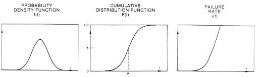
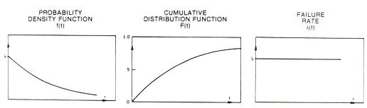
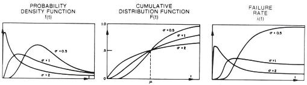
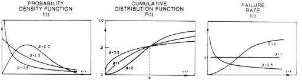

Life
Distributions
Reliability
engineers are in many ways like soothsayers - they are expected to
predict many things for the semiconductor company: how many failures
from this and that lot will occur within x number of
years, how much of this and that lot will survive after x
number of years, what will happen if a device is operated under these
conditions, etc.
To many
people, such questions seem overwhelmingly difficult to answer,
half-expecting reliability engineers to demonstrate some supernatural
powers of their own to come up with the right figures.
Fortunately
for reliability engineers, they don't need any paranormal abilities to
give intelligent responses to questions involving failures that have not
yet happened. All they need is a good understanding of
statistics
and
reliability
mathematics
to be up to the task.
Reliability
assessment,
or the process of determining to a certain degree of confidence the
probability of a lot being able to survive for a specified period of
time under specified conditions, applies various statistical analysis
techniques to analyze reliability data. If properly done, a
reliability prediction using such techniques will match the survival
behavior of a lot, many years after the prediction was made.
A good
understanding of life distributions is a must-have for every reliability
engineer who expects to exercise sound reliability engineering judgment
whenever the need for it arises. A
life
distribution
is simply a collection of time-to-failure data, or life data, graphically presented as
a plot of the number of failures versus time. It is just like any
statistical distribution, except that the data involved are life data.
By looking at the
time-to-failure data or life distribution of a set of samples taken from
a given population of devices after they have undergone reliability
testing, the reliability engineer is able to assess how the rest of the
population will fail in time when they are operated in the field.
Based on this reliability assessment, the company can make the decision
as to whether it would be safe to release the lot to its customers or
not, and what risks are involved in doing so.
All new
engineers in the semiconductor industry are acquainted with the
bath tub
curve,
which represents the over-all failure rate curve generally observed in a
very large population of semiconductor devices from the time they are
released to the time they all fail. The bath-tub curve has three
components: the
early life
phase, the
steady-state
phase, and the
wear-out
phase.
The failure
rate is highest at the beginning of the early life phase and the end of
the wear-out phase. On the other hand, it is lowest and constant in the
long steady-state phase at the middle part of the curve. Collectively,
these phases make the curve look like a bath tub (where it obviously got
its name).
The bath tub
curve takes into account all possible failure mechanisms that the
population will encounter. Some failure mechanisms are more
pronounced in the early life phase (such as early life dielectric
breakdown), while others are more pronounced in the steady-state or
wear-out phases. Failures that occur in the early life phase are known
as
infant mortality,
which are screened out in production by burn-in.
In real life,
it is not always practical to evaluate the failure or survival rate of a
population of devices in terms of the bath tub curve. Reliability
assessments are often conducted to evaluate only the known weaknesses of
a given lot or, if the lot has no known weaknesses, to determine if it
is vulnerable to any of the critical failure mechanisms dreaded in the
semiconductor industry today.
Such
reliability assessments are conducted by running a set of
industry-standard reliability tests, generating life data along the way.
These life data are then analyzed according to what type of life
distribution they fit.
There are
currently
four (4) life
distributions
being used in semiconductor reliability engineering today, namely, the
normal distribution, the
exponential distribution, the lognormal distribution,
and the Weibull distribution.
Different failure mechanisms will result in time-to-failure data that
fit different life distributions, so it is up to the reliability
engineer to select which life distribution would best model the failure
mechanism of interest.
Life distributions are
described mathematically by
life distribution functions. Three of
these functions are very important descriptors of life distributions,
and should be understood by every reliability engineer. These are
the
cumulative failure distribution function F(t), the failure probability density function f(t), and the curve of failure rate
l(t).
The
cumulative
failure distribution function F(t),
or simply cumulative distribution function,
gives the probability of a failure occurring before or at any time, t.
This function is also known as the unreliability function. If a
population of devices is operated from its initial use up to a certain
time t, then the ratio of failures, c(t), to the total number of devices
tested, n, is F(t). Thus, F(t) = c(t)/n. F(t) is therefore always
less than 1, which is consistent with the fact that it's just a
probability number after all.
The
unreliability function F(t) has an equivalent opposite function - the
reliability function R(t). R(t) = 1 - F(t), so it simply gives the
ratio of units that are still good to the total number of devices after
these devices have operated from initial use up to a time t.
The
failure probability density
function f(t),
or simply probability density function,
gives the relative frequency of failures at any given time, t. It
is related to F(t) and R(t) by this equation: f(t) = dF(t)/dt = -dR(t)/dt.
The
curve of failure rate
l(t),
also known as the failure rate function or the hazard function, gives the instantaneous failure rate at any given
time t. It is
related to f(t) and R(t) by this equation:
l(t)
= f(t)/R(t). Thus,
l(t)
= f(t)/[1-F(t)].
More details
on how these functions describe the various life distributions may be
found at
Life Distribution Functions.
The Normal
Life Distribution
A
normal life distribution
is one that consists of time-to-failure or life data that constitute a
normal distribution. Thus, it is a
symmetric bell-shaped curve whose mean, median, and mode are equal.
The spread of the normal life distribution is determined by the standard
deviation
s
of its life data. The failure rate of a normal life distribution
monotonically increases with time, which is failure rate pattern
typically exhibited by failures due to
wear-out.
Normal
distributions are often a result of the
additive
effects of
random
variables. Thus, normal life distributions are generally applicable to
failures that are affected by additive factors, such as mechanical
system failures that occur as a result of the accumulation of small and
random mechanical damage. Such mechanical failures are often
observed as the system wears out with use.

Figure 1.
The f(t), F(t), and
l(t)
of a normal life distribution; source: D. S. Peck and O. D. Trapp,
Accelerated Testing Handbook, Technology Associates.
We all know
that the over-all failure rate of semiconductors do not increase
monotonically with time. In fact, there aren't too many
semiconductor failure mechanisms that fit the normal life distribution.
Thus, the
normal
life distribution is generally
not
used by reliability engineers to model semiconductor survival in the
field.
Note,
however, that the bath tub curve representing the failure rate
curve of semiconductor devices does include a wear-out phase in the end.
This
wear-out phase,
although just the end portion of a semiconductor's life, may be modeled
by a
normal
life distribution.
The
Exponential Life Distribution
An
exponential
life distribution
is one wherein the failure rate is constant in time. The exponential
life distribution is best applied to the analysis of failures in the
steady-state
phase of the bath tub curve, during which the failure rate is constant.
Other than this, reliability engineers don't use the exponential life
distributions a lot, because there are not too many
frequently-encountered critical failure mechanisms that exhibit this
life distribution.

Figure 2.
The f(t), F(t), and
l(t)
of an exponential life distribution; source: D. S. Peck and O. D. Trapp,
Accelerated Testing Handbook, Technology Associates.
The
Lognormal Life Distribution
The
lognormal
life distribution
is one wherein the natural logarithms of the lifetime data, ln(t), form
a normal distribution. Consequently, the life data of a lognormal
distribution will also form a straight line if plotted on a
lognormal
plot, i.e., a plot whose x- and y-axes stand for the cumulative % of
failures and the logarithmic scale of time, respectively. The
failure rate curve
l(t)
of a lognormal life distribution starts at zero, rises to a peak, then
asymptotically approaches zero again for all values of
s.
The lognormal
distribution is formed by the
multiplicative
effects of random variables. Multiplicative interactions of variables
are found in many
natural
processes, and are in fact observed in many frequently-encountered
semiconductor failure mechanisms. This characteristic of the
lognormal distribution makes it a
good
choice for the analysis of the failure rates of many semiconductor
failure mechanisms.
A notable
characteristic of the lognormal distribution is the fact that its median
time to failure, t50%, or the time at which 50% of the
samples fail, is equal to eµ, where µ is the mean of the life
data. Thus, t50%
= eµ.

Figure 3.
The f(t), F(t), and
l(t)
of a lognormal life distribution; source: D. S. Peck and O. D. Trapp,
Accelerated Testing Handbook, Technology Associates.
The
Weibull Life Distribution
The
Weibull life
distribution
was developed by W. Weibull of Sweden to investigate metal fatigue
failures. It is described by a location parameter
a
and a shape
factor
b,
and is similar to the lognormal distribution in many ways. Two of the
major differences between them are: 1) the Weibull distribution's
probability density function does not start from zero; and 2) its
failure rate curve
l(t)
is monotonically increasing for
b
> 1 and
monotonically decreasing for
b
< 1.
The Weibull
distribution can take on many shapes, depending on the value of the
shape factor
b.
In fact, by varying the value of
b,
all the phases of the bath tub curve can be modeled by the Weibull
distribution. The
early life
phase, wherein the failure rate decreases with time, can be represented
by the Weibull distribution with
b
< 1.
The
steady-state
phase, wherein the failure rate is constant, can be represented by the
Weibull distribution with
b
= 1.
Finally,
letting
b
be > 1
will make the Weibull distribution a model for the
wear-out
phase,
wherein the failure rate increases with time.

Figure 4.
The f(t), F(t), and
l(t)
of a Weibull life distribution; source: D. S. Peck and O. D. Trapp,
Accelerated Testing Handbook, Technology Associates.
The Weibull
distribution has become popular in reliability engineering, partly
because of its simpler math and flexibility, and partly because earlier
works using this distribution have found it to fit some failure
mechanisms nicely. A closer look at the same mechanisms showed
that they, too, fit the lognormal distribution.
Thus, the
lognormal distribution should have been a better choice in the first
place since its mathematics are consistent with the physical phenomena
taking place. Care must therefore be taken when an engineer sees data
fitting the Weibull distribution, since they can turn out to be
lognormal in reality.
Please
see Life Distribution Functions for
more detailed mathematical descriptions of these life distributions.
See also:
Reliability
Engineering;
Life Dist. Functions; Lognormal Plots; Reliability
Modeling; Failure
Analysis; LTPD/AQL Sampling
HOME
Copyright
© 2004
EESemi.com.
All Rights Reserved.